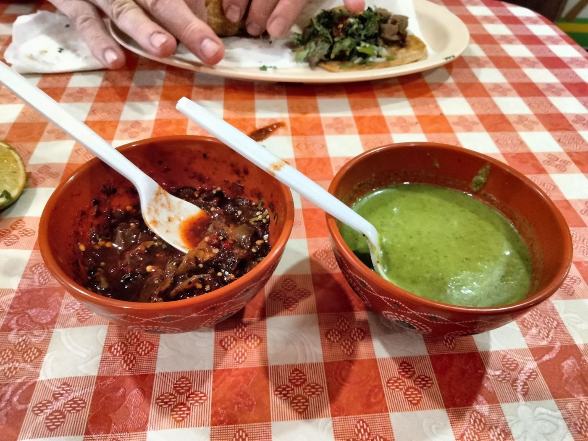

4.6★ la gente
“Very good food very nice people also”
“Taqueria Jalisco is hands down my favorite Mexican restaurant in Kansas City. The food is always fresh, authentic, and full of amazing flavor.🤤 What really sets this place apart is the very friendly people and awesome service. ❤️ Taqueria Jalisco is the place to go. Highly recommend! 👌🏼👌🏼”
“Very friendly people! The food is amazing and the place reminds me of being in Mexico. This is definitely a hidden gem!”
“We went here on a Taco tour. The food was excellent. The place is clean and great service. This is definitely going to be on our list of regular spots.”
“Simple menu, delicious food, friendly service. Straight forward restaurant with a down home feeling. I enjoy this restaurant! Update: Still loving this restaurant!!! 😀”
“We visited Taqueria Jalisco just to sample the Tacos Al Pastor but when we saw they had Birria we just had to try that too! The Pastor tacos were okay, pretty good flavor but not remarkable. However, the Birria was absolutely fantastic! Served piping hot with a big steaming bowl of broth to dip in. Really enjoyed the selection of salsas as well! This restaurant has you sit down to order with table service and then pay at the counter. They have a small selection of ice cold beers as well! Definitely recommend and will return, hungry for more!”
“This is my favorite place to get quesabirrias, hands down! They are delicious. We order and always get our food in a timely fashion. They're tacos are also very good. I usually get the tacos de asada. The owners are very kind and friendly, it seems like they know most of their customers personally.”
“This restaurant serves very good food! Very well prepared and flavorful. The staff have always been friendly and accommodating. Its a small establishment with limited seating and no real parking space or exterior decour. But don't let that deter you from eating there if you like Mexican food. Its one of the best Mexican restaurants that I've tried in Kansas City, Kansas. Delicious😋 They have excellent, distinctive quesadillas. Very large and flavorful. I'd also recommend the very good tacos and tortas and shrimp soup. Hablas español? Note. If you don't speak enough Spanish to at least order a…”